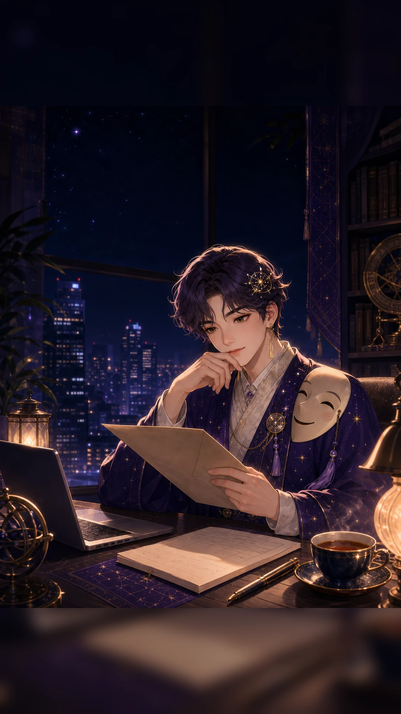
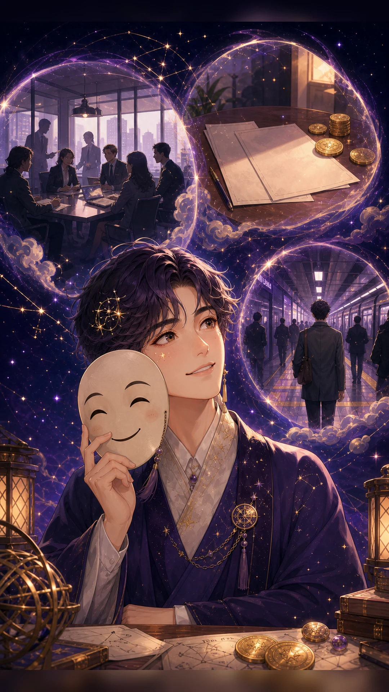
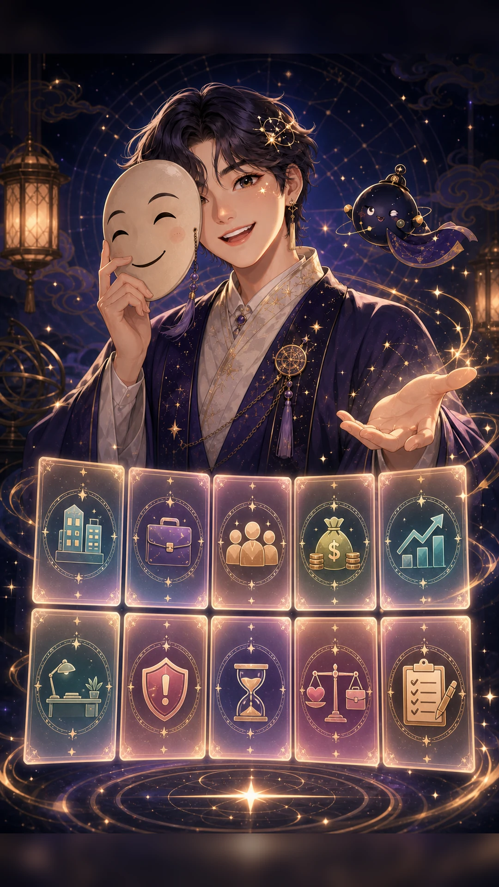
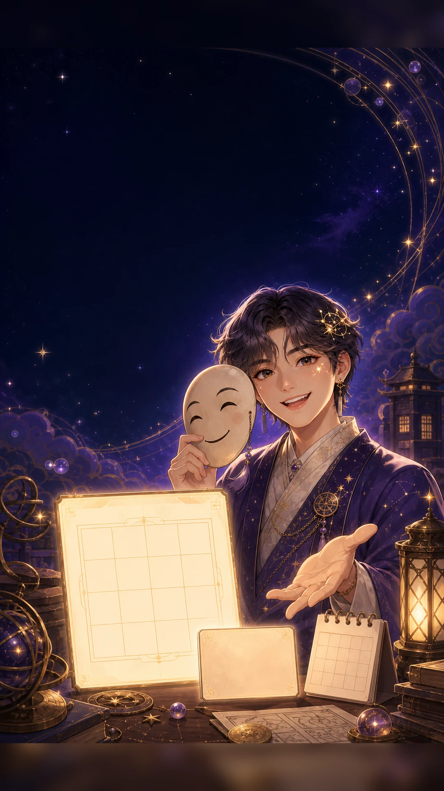
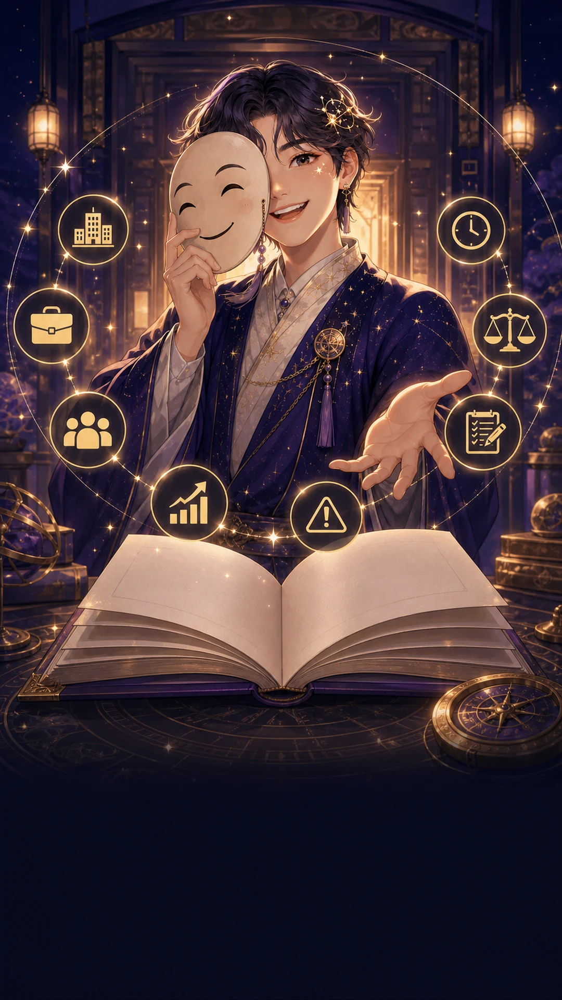

직장 선택 사주 · 9,900원
이 회사,
이 회사,
나랑 결 맞을까?
오퍼는 괜찮아 보이는데 마음 한쪽이 걸린다면, 직무·사람·돈·타이밍을 한 번에 놓고 봅니다.
보는 기준자미두수 + 사주 흐름
확인하는 것회사 핏, 리스크, 액션
진행 단계회사 조건 입력 후 풀이 시작

고민 공감
조건은 나쁘지 않은데,
조건은 나쁘지 않은데,
찝찝한 포인트가 남을 때
연봉만 보면 괜찮고, 이름값도 있어 보이는데 막상 들어간 내 모습이 잘 그려지지 않을 수 있어요.

반복되는 상황
직무, 사람, 돈, 출퇴근이
직무, 사람, 돈, 출퇴근이
한꺼번에 걸리면
판단이 흐려집니다
그래서 한 가지 운만 보지 않고, 회사 안에서 실제로 부딪힐 장면을 나눠 봅니다.
직무 핏내가 힘을 쓰는 방식과 업무가 맞는지
회사생활 케미상사, 동료, 고객과의 호흡이 어떤지
돈값연봉과 조건이 장기적으로 남는지
리스크압박, 갈등, 역할 혼란이 어디서 오는지
풀이 기준
관록은 일,
관록은 일,
재백은 돈,
교우는 사람을 봅니다
이직·입사 질문은 관록궁을 중심으로 천이궁, 재백궁, 교우궁, 복덕궁과 시기 흐름을 함께 놓고 읽습니다.

풀이 리스트 예고
대분류부터 중분류까지,
대분류부터 중분류까지,
이런 것까지 열립니다
이 회사, 나랑 결 맞아?전체 핏 판정, 끌리는 이유, 찝찝한 포인트, GO/HOLD/협상/보류 시그널
직무 핏리더형, 기획·분석형, 말·교육·콘텐츠형, 재무·운영·관리형, 상담·연구형
회사생활 케미상사 케미, 팀원·동료 케미, 조직문화 적응도, 사내 정치/라인 리스크
돈값 하는 회사인가연봉 만족도, 성과급 흐름, 돈이 쌓이는 구조, 계약 조건 체크
성장각승진·평가운, 포트폴리오 성장, 자격·스킬업, 권한 확대, 네임밸류
업무 환경출퇴근·근무지, 출장·이동·해외, 원격 업무 궁합, 회사 규모와 안정감
리스크 체크역할 혼란, 상사 압박, 문서·계약 실수, 팀 갈등, 과로, 평판 관리
입사 타이밍지금 들어가도 되는 흐름, 변동기, 첫 90일 테스트, 입사·계약일 택일
멘탈·워라밸평가 스트레스, 회복 리듬, 내면 만족도, 현타 포인트, 버틸 루틴
현실 액션 플랜오퍼 체크리스트, 면접·협상 질문, 첫 30·60·90일 전략, 보류 조건

무료 티저
먼저 가볍게,
먼저 가볍게,
내 선택의 첫 신호부터 봅니다
생년월일을 입력하면 이 회사가 끌리는 이유와 먼저 확인할 리스크 한 줄을 무료로 보여드립니다.

직장 선택 리포트
들어갈지, 협상할지,
들어갈지, 협상할지,
조금 더 볼지
선택 기준을 정리합니다
01 · 전체 핏GO/HOLD/협상/보류 시그널과 지금 마음 상태
02 · 직무와 조직업무 스타일, 상사·팀원 케미, 조직문화 적응도
03 · 돈과 성장연봉 만족도, 성과급 흐름, 승진·평가, 포트폴리오 성장
04 · 리스크와 타이밍역할 혼란, 과로, 계약 체크, 첫 90일 전략
자미두수와 사주 흐름은 선택을 대신 확정하지 않습니다. 현실 조건을 함께 확인하는 참고 풀이로 제공합니다.